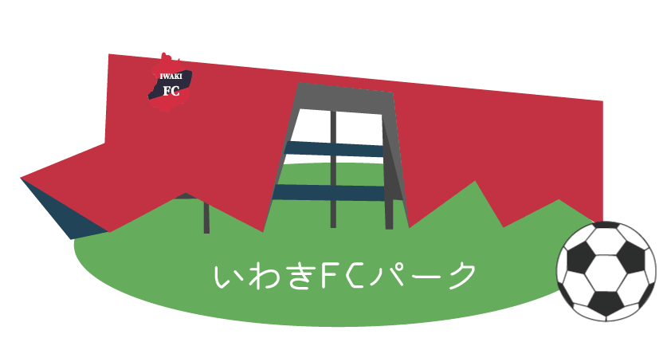
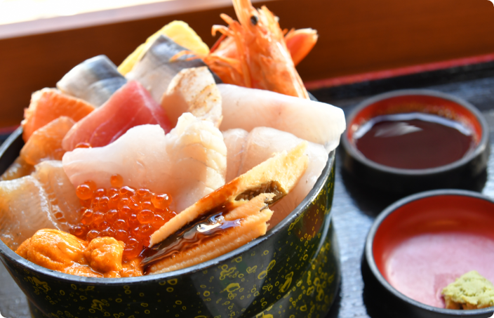

IWAKI GUIDE
小名浜エリア
ohanama area小名浜は、いわき市南部にある地域です。小名浜は海が近いため、マリンスポーツを楽しんだり、美味しい海産物を食べたりと様々な魅力があります。そのほかにも、夏にはいわき最大のイベントである「いわき花火大会」が開催されおり、毎年たくさんの方が小名浜を訪れています。
 海風たくさんの
東北一番の絶景巡り
海風たくさんの
東北一番の絶景巡り


湯本エリア
yumoto areaJR湯本駅から西側にある、昔ながらの風情が残る温泉街。 かつては常磐湯本温泉と呼ばれていました。 映画にもなっている『フラガール』の舞台になった、 スパリゾートハワイアンズがあります。 『フラのまちいわき湯本温泉』として 大々的にPRしています。

 いわき湯本の温泉郷で
癒しを求めて湯めぐり
いわき湯本の温泉郷で
癒しを求めて湯めぐり


いわき泉エリア
iwaki izumi areaぶらり歴史散歩 JR泉駅から歩いて、かつて泉町にあった泉藩の歴史を探ることができます。 街並みをゆったりあるきながら面影を見つけてのんびり散策ください。 現在の姿から過去を想像すると、歴史の奥深さに惹きこまれますよ！

ぶらり歴史散歩
東北一番の歴史の奥深さ

いわき鹿島エリア
iwaki kashima area鹿島エリアは、浜通り地区の商業拠点平と、国際港を抱える産業拠点小名浜を直結する大動脈で、 地域経済のホットラインとして欠かせないエリアです。また、春に有名な鹿島千本桜を見るために全国から人が集まってくるようです。

いわきの大動脈
ホットライン。